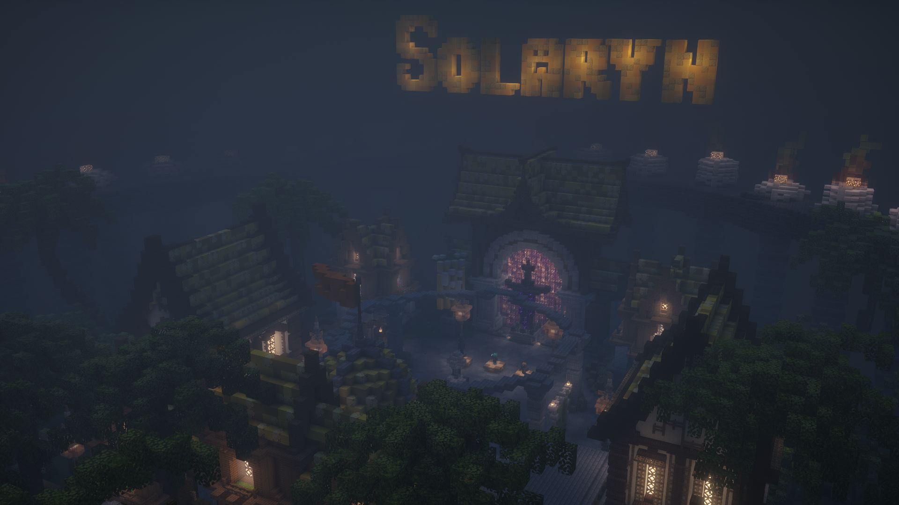
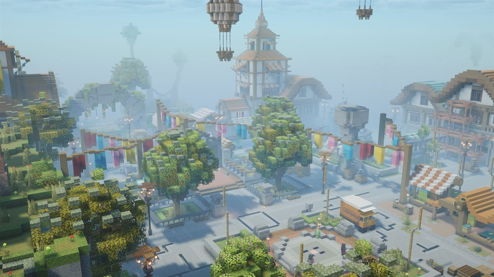
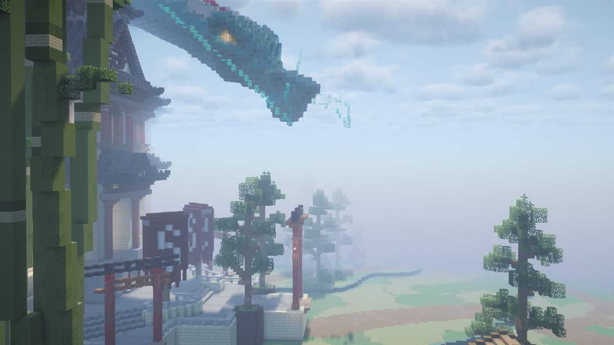
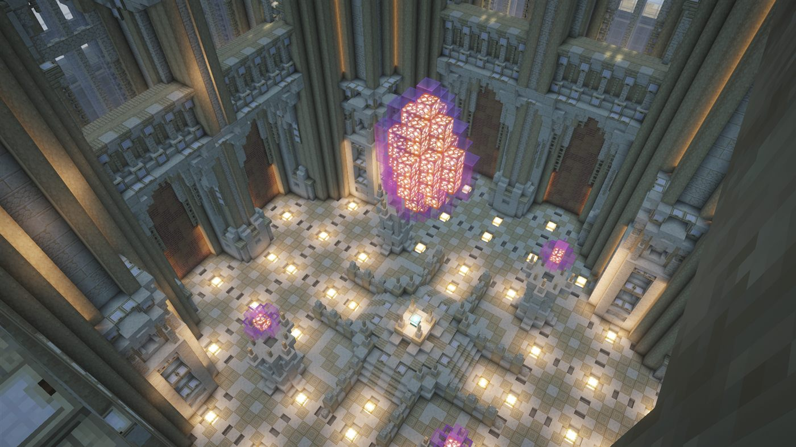
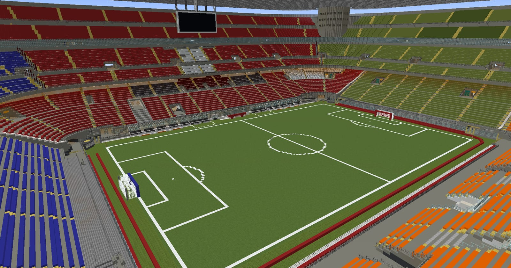
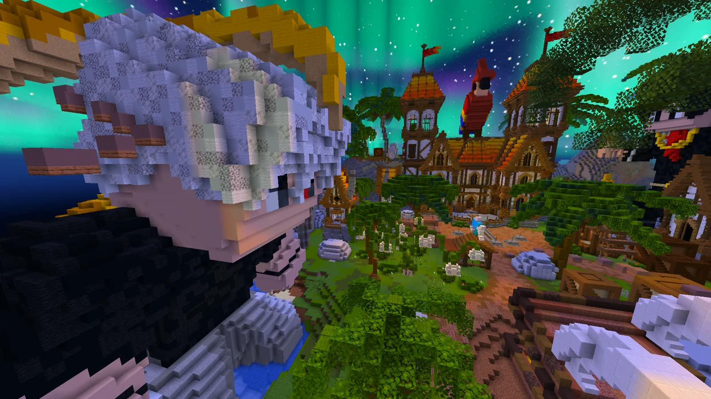
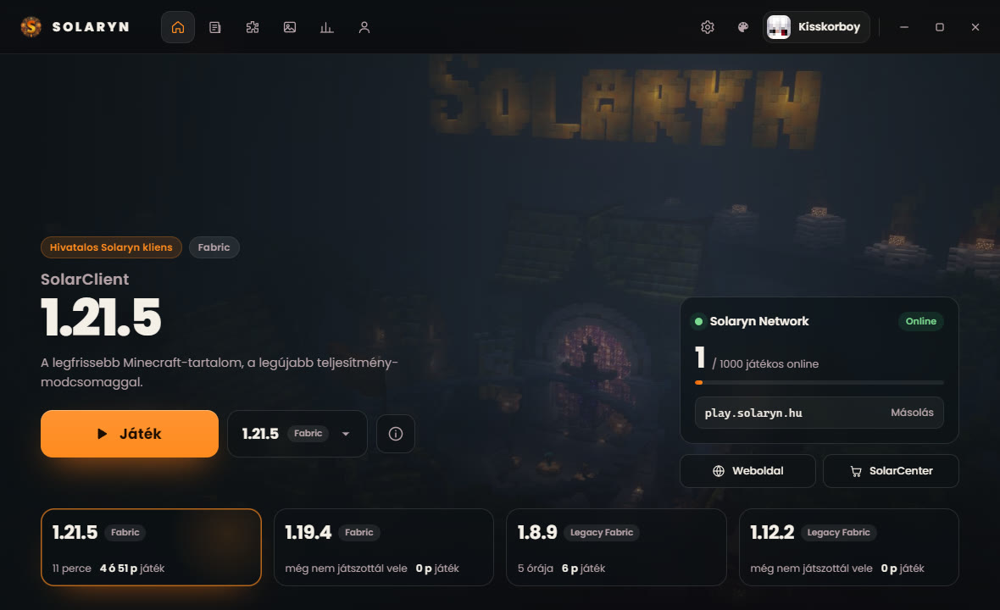

Saját pluginok
A szervereken rengeteg saját fejlesztésű plugin fut, nem csak letöltött megoldások.
Öt játékmód, saját kliens és saját anticheat. Ingyenesen játszható, csak a launcher kell hozzá.
Magyar Minecraft-hálózat, amit hárman viszünk. A kliens, az anticheat és a pluginok jó része a saját munkánk, úgyhogy ha valami nem jó, ki tudjuk javítani.

A szervereken rengeteg saját fejlesztésű plugin fut, nem csak letöltött megoldások.
Csak a hivatalos klienssel lehet belépni, benne van az anticheat és az integritásvédelem. Így mindenki ugyanolyan feltételekkel játszik.
A SolarCenterben vásárolható tartalom kényelmi vagy kozmetikai. Minden komoly előny elérhető fizetés nélkül, játékkal is.
Ha kérdésed van vagy bajba kerültél, a staffot Discordon és a játékban is eléred.
A kliens és a szerverek sokat változnak. Hogy mi jött mostanában, lejjebb, az Újdonságoknál látod.
Fiók, rang, PrémiumPont, skin és vásárlás, ugyanazzal a fiókkal, mint a launcherben.
Mind ugyanazzal a fiókkal és klienssel megy, a lobbyból váltasz közöttük.

Túlélő, közösségi
Túlélő játékmód királyságokkal. Alapítasz egyet vagy beállsz valakiéhez, kiosztjátok a rangokat (vezér, al-vezér, tag), és nulláról építkeztek.
A piacon kereskedhettek a többiekkel, szövetséget köthettek, a csatákból pedig a királyságotok presztízse és ranglista-helyezése nő. Van nexus-fejlesztés, területfoglalás, KOTH és boss event, a jutalmak öt fajta ládában jönnek.

PvP, mozgás-alapú
PvP, ahol a mozgás legalább annyit számít, mint a kard. Választasz egy kasztot (kitet), mindegyiknek saját aktív és passzív képessége van.
Aktívból van Sebességlöket, Láthatatlanság, Erőlöket, Védelmi löket, Égbetörés, Üstökös-zuhanás és Lökéshullám. Passzívból többek között Falfutás, Ugrásnövelés, Elnyelő pajzs és Kombó-roham. Minden kit máshogy játszik.

RPG, dungeonök
RPG a hálózaton belül: egyedi dungeonök, questek és kasztok, amiket egyre erősebb varázslatokkal fejlesztesz.
Minden varázslat és képesség manából megy, szóval érdemes beosztani. A dungeonök végén bossok várnak, egyedül vagy csapatban is nekik mehetsz, és ha inkább játékosokkal harcolnál, PvP is van.

Csapatsport, meccsek
Foci Minecraftban: két csapat, egy pálya és egy fizikailag szimulált labda.
Meccsenként kapsz egy Gyorsulás-képességet rövid visszatöltéssel, ezzel érhetsz oda előbb a labdához. A gólok, meccsek és győzelmek bekerülnek a statisztikádba, az eredmények pedig kimennek a Discordra is.

Szezonális, minijátékok
Szezonális játékok, időszakonként cserélődnek. Most a BedWars megy: 15 pálya szóló, duó, trió és négyes módban, összesen 60 aréna.
Később jönnek más klasszikusok és saját ötletek is. Egyedül vagy a barátaiddal is beugorhatsz egy gyors körre.
A Solarynra csak a saját launcherünkkel lehet csatlakozni. Más kliensről (pl. vanilla, Lunar, Badlion, FyreMC) a szerver nem enged be, így mindenkinél ugyanaz az anticheat fut.
SolarClient
Windows 10/11, 64 bit, a telepítő kb. 80 MB, a játékfájlokat az első indításkor tölti le.

Mindegyikkel ugyanarra a hálózatra lépsz be, a launcherben bármikor válthatsz.
| Verzió | Harc | Gépigény | Shaderek | Extra | Neked való, ha... |
|---|---|---|---|---|---|
| 1.21.5Fabric | Modern (töltődő ütés) | Közepes-erős | Igen | Sodium, Lithium, FerriteCore, Zoom, Freelook | a legújabb blokkokat és mechanikákat szeretnéd |
| 1.19.4Fabric | Modern (töltődő ütés) | Közepes | Igen | Motion Blur, Color Saturation, Zoom, Freelook | modern élményt szeretnél, közepes gépen is |
| 1.8.9Legacy Fabric | Klasszikus 1.8-as | Alacsony | Nincs | Zoom, Phosphor-Legacy fényoptimalizálás | a régi PvP-t szereted, vagy gyengébb a géped |
| 1.12.2Legacy Fabric | Töltődő ütés, pajzzsal | Alacsony | Nincs | Phosphor-Legacy, FPS Plus, Ksyxis, Zoom | a retro hangulat kell, de több tartalommal |
Az épp szóló dal borítóval, idősávval és sorról sorra szinkronizált dalszöveggel. Megy Spotifyjal, YouTube-bal, Apple Musickal és böngészőből is. A dalszöveg elytrázás közben akár előtted is lebeghet a világban.
Az élet a fejek fölött szívekként vagy számmal. Ütéskor lebegő szám mutatja, mennyit sebeztél, saját színekkel, kritikus ütésnél és ölésnél kiemelve.
Rajzold meg egy 17×17-es rácson. Van radír, tükrözés, minták és előnézet.
Egy gombhoz, akár az egér oldalgombjaihoz kész üzenetet vagy parancsot rendelhetsz.
Mutatja a lenyomott gombokat, és azt is, merre mozgatod az egeret.
Minden modult oda teszel, ahová akarod, és újraindítás után is ott marad.
Rögzítsd a meneteidet, nézd vissza szabad kamerával, és vágj belőlük videót.
Modok, textúracsomagok és shaderek, a launcherből telepítve. Ha kettő nem megy együtt, a launcher szól.
A Simple Voice Chat és a Translator bővítményként telepíthető.
Játékidő, sorozatok, napszak- és napi bontás, jelvények a launcherben.
A képernyőképeid egy helyen. A naplóban a kényes adatok automatikusan el vannak rejtve.
Első indításkor előnézetekkel segít választani: verzió, HUD-modulok, kliensszín, teljesítmény.
A launcher magától frissít. Ezek jöttek mostanában.
A frissítési napló a launcherben is elérhető.
Fiók, rang, PrémiumPont, skin és vásárlás, ugyanazzal a fiókkal, mint a launcherben. Amit itt veszel, az kényelmi vagy kozmetikai: játszani és érvényesülni fizetés nélkül is lehet.
Fejlesztés, technikai háttér
Több éve vagyok fejlesztő, és rengeteg projektben vettem már részt. Saját játékom is van, ami az Overclock névre hallgat, és saját böngészőm is, ami a Tracer nevet viseli. A Solarynon a fejlesztésért és a technikai háttérért felelek, hogy minden gyorsan, stabilan és biztonságosan fusson.
Tartalomgyártás, közösség
Több éve készítek videókat, a YouTube-csatornámon már 15 ezer feliratkozó követ, és mellette ugyanennyi ideje fejlesztek is. A Solarynon a fejlesztés mellett a közösségért és a tartalmakért felelek.
Pénzügy, jog, gazdaság
Én vezetem a Solaryn pénzügyeit és jogi ügyeit, és én szabályozom a szerver gazdaságát, hogy minden átlátható, szabályos és kiegyensúlyozott maradjon, a játékon belül és azon kívül is.
Töltsd le a launchert, telepítsd, és jelentkezz be a Solaryn-fiókoddal. Ha még nincs, a launcherben vagy a SolarCenterben ingyen regisztrálhatsz. Utána csak nyomd meg a Játék gombot, a launcher letölt és beállít mindent. Nem kell kézzel IP-t beírni vagy modokat telepíteni.
Nem. A Solarynra csak a saját kliensünkkel (SolarClient) és launcherünkkel lehet csatlakozni, ezt technikailag is kikényszerítjük. Más kliensről a szerver nem enged be.
Így mindenkinél ugyanaz az anticheat fut, és nehezebb csalni. A kliensben emellett olyan funkciók vannak (barátlista, jelvények, beépített optimalizáció), amik más klienssel nem működnének.
A launcher feltelepíti a megfelelő verziót és a szükséges modokat. Neked csak egy Solaryn-fiók kell, amit ingyen regisztrálhatsz a launcherben vagy a SolarCenterben.
Igen, teljesen ingyenes és nem pay2win. A SolarCenterben vehetsz rangot, kozmetikát és PrémiumPontot, de ezek csak kényelmi vagy kozmetikai előnyök. Fizetés nélkül, játékkal is érvényesülhetsz.
Nézd meg, hogy a launcher legfrissebb verzióját használod-e, indítsd újra, és ellenőrizd az internetkapcsolatod. Ha így sem megy, keress minket a Discordon.
A tagfelvétel időszakos, a Discordon hirdetjük meg, úgyhogy ott figyeld a bejelentéseket.
A SolarCenterben. Ott van a rangod, a PrémiumPont-egyenleged, a játékidőd, a barátaid és a jelvényeid.
Erre nincs kész válaszunk. Kérdezz minket a Discordon.
Eventek, nyereményjátékok és frissítések először ide kerülnek.